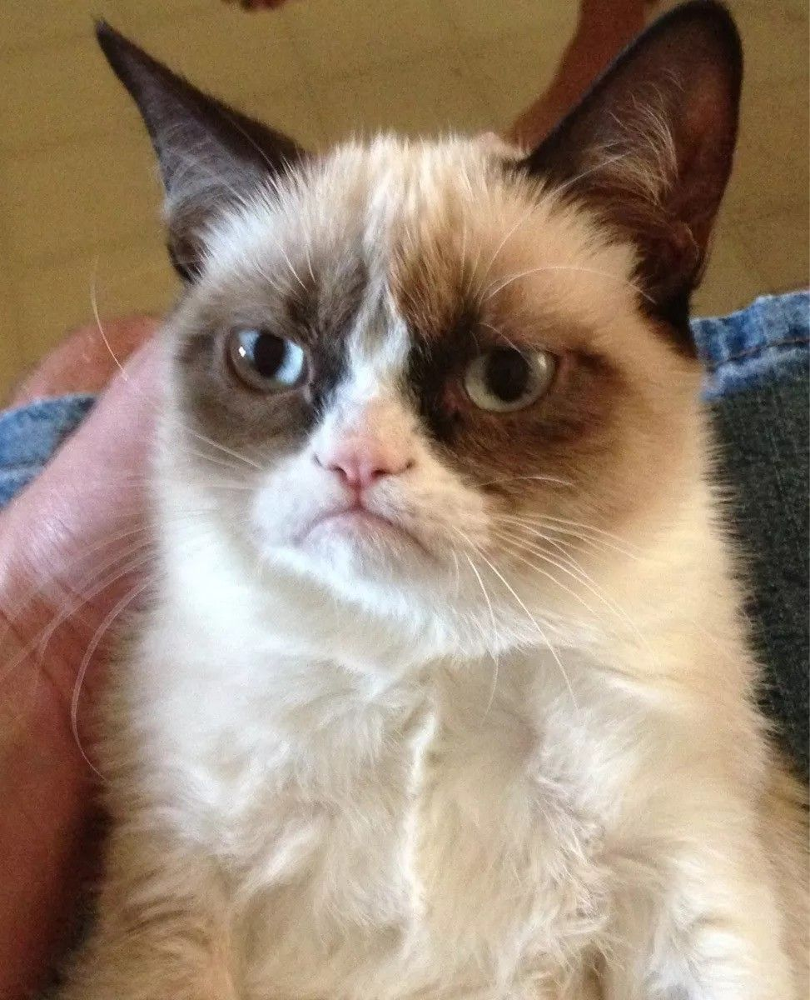
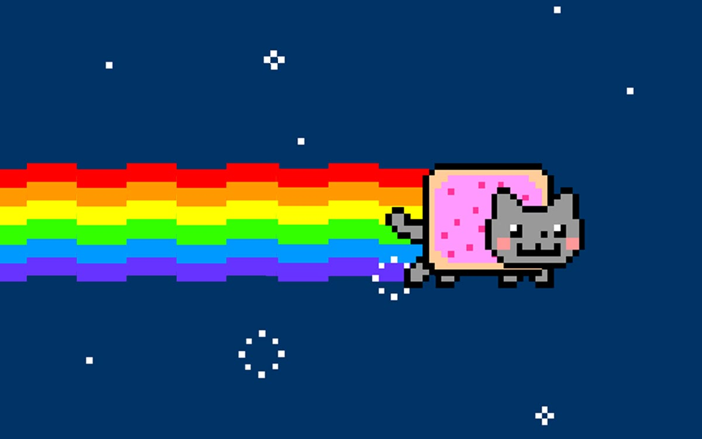
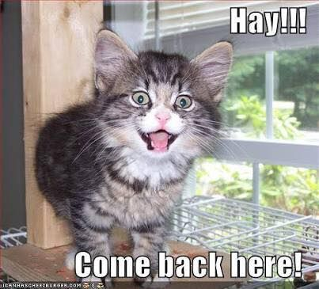
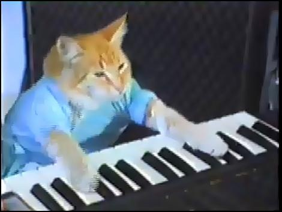
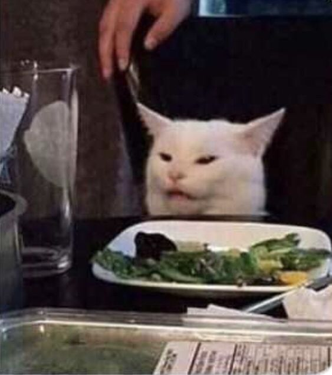
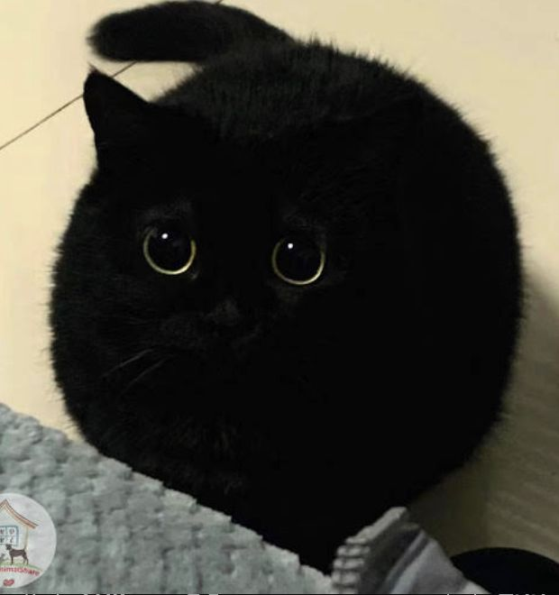
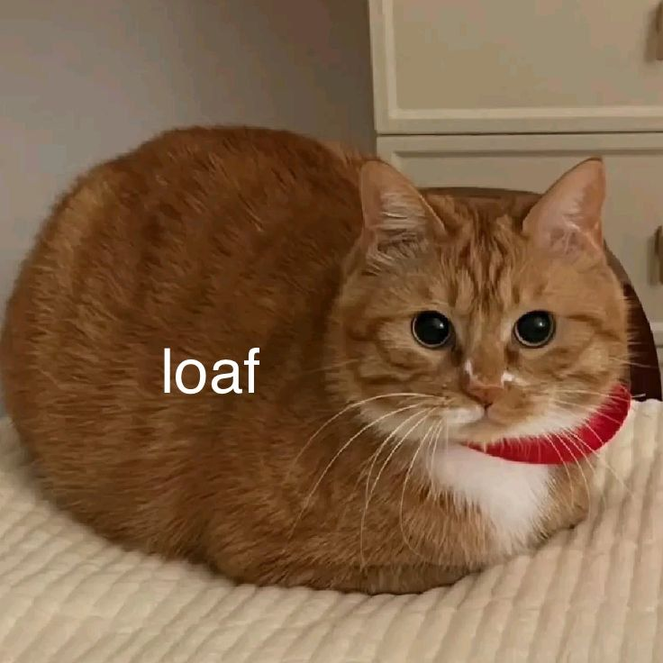
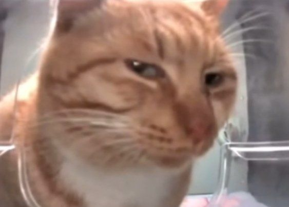

✦ every legend. every lore drop. all in one place. ✦
✦ OG LEGENDS — THE FOUNDING CATS ✦

GRUMPY CAT
📅 viral: 2012
"I had fun once. It was awful."
Real name: Tardar Sauce. Born with feline dwarfism giving her a permanently grumpy face. Did not choose the grump life. Passed away 2019 but her disappointment lives on in all of us on Monday mornings.

NYAN CAT
📅 viral: 2011
"nyanyanyanyanyanya"
A pop-tart cat flying through space leaving a rainbow trail. Created by Chris Torres. Sold as an NFT for $590,000. The internet is a place. There is no deeper meaning. Or maybe there is. We don't know.

LOLCAT OG
📅 viral: 2007
"i can haz cheezburger?"
The founding father. The original. Before memes were memes, there was LOLcat. The broken grammar was intentional. It started a whole language. Still waiting for that cheezburger since 2007.

KEYBOARD CAT
📅 viral: 2009
"*plays you off*"
Originally filmed in 1984. Posted to YouTube in 2007. Used to play people off after fails. A musical genius with no formal training. The original reaction meme. Wore a tiny shirt. Iconic.
✦ MODERN ERA — THE NEW LEGENDS ✦

SMUDGE
📅 viral: 2019
"that is NOT a salad."
Someone put Smudge in front of a salad for a photo. He was not happy about it. Combined with a screaming woman from Real Housewives, it became the woman yelling at cat meme. The salad knows what it did.

VOID CAT
📅 viral: 2020
"I am the void. I am within you."
Black cats on the internet achieved sentience around 2020. Collectively known as void cats. They stare. They judge. They knock things off tables. They are one with the darkness. We respect this.

LOAF CAT
📅 viral: 2016
"I have no limbs and I must loaf."
When a cat tucks all four limbs under its body, it becomes a loaf. A perfect rectangle. A bread unit. Scientists have studied this. No useful conclusions were reached. The loaf remains a mystery.

JUDGEMENTAL CAT
📅 viral: 2021
"I have seen your browser history."
This cat knows everything. Every bad decision you have made. Every 3am purchase. Every text you sent and regretted. It stares. It judges. It says nothing. It does not need to.